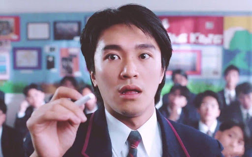

周星驰
周星驰，昵称星爷、星仔，祖籍浙江省宁波市，香港男演员、导演、监制、编剧、广东省政协委员。
小时家穷，有一姊一妹，7岁时父母离异，他和姊妹由母亲凌宝儿独力养大。
他于1974年毕业于中华基督教会协和小学下午校后，在基督教香港信义会信义中学就读中一。读中二时与李健仁同班，中五毕业于圣玛利奥英文中学。
在学期间迷恋李小龙的电影，他立志成为一帮之主。
重要事件
- 1980年，18岁的周星驰在丽的电视当临时演员而入行，首次于青春电视剧《I.Q.成熟时》演出，同时兼职办公室助理。
- 1981年经戚美珍介绍进入无线电视艺员训练班。
- 1983年，毕业后不久，他被安排到儿童节目《430航天飞机》担任主持人4年。
- 1988年演出李修贤监制的电影《霹雳先锋》，他凭该片夺第25届金马奖最佳男配角。
- 1989年，周星驰担任《盖世豪侠》的主角，是他首次担演第一男主角,周星驰由此走红。
- 1990年，周星驰担当低成本电影《赌圣》的男主角，首破香港影史纪录，周星驰凭着这部电影奠定了巨星的地位。
- 1991年，周星驰主演的《逃学威龙》，第二次大破香港影史纪录。他与成龙、周润发三人更被喻为“双周一成”，周星驰被媒体称为“星爷”。
- 1992年，周星驰主演7部电影，其中5部囊括香港票房排行榜前五名，更凭大破香港影史纪录的《审死官》获得亚太影展影帝大奖。
- 1992年更被媒体称为“周星驰年”。
- 1990年代初，周星驰开始参与编剧、导演等工作。
- 1993年，周星驰便初次列名导演之一，《唐伯虎点秋香》海外发行版有注明“周星驰导演”。
- 1996年和永盛娱乐完约后，他成立了星辉海外有限公司。
- 1996年，周星驰作为导演和出品人的《食神》上映后，二十世纪影业向周星驰买下《食神》版权，但最终被他拒绝。
- 2001年，周星驰首次独立执导的《少林足球》，打破香港华语片票房纪录，唯一凭同一部电影兼夺最佳导演及最佳男主角宝座的得奖者。
- 2004年推出《功夫》，打破《少林足球》所创下的香港华语片票房纪录。打破数十个国家和地区的华语电影票房纪录。周星驰以该片获得第42届金马奖最佳导演、最佳剧情片。
- 2008年周星驰再次身兼监制、导演、编剧、以及主演的《长江7号》，位列香港华语片票房第7名。
- 2010年，周星驰入主香港上市公司比高集团并担任执行董事。
- 2013年起任第十一届广东省政协委员。
- 2016年3月，周星驰监制、编剧及导演的电影《美人鱼》成为世界史上最高票房的非好莱坞电影。
国际荣誉
1992年
- 美国《人物》杂志评周星驰为“全球最有趣男明星”。至今唯一一位华人获此殊荣
- 韩国汉城亚太国际电影节以威龙闯天关获得“亚太影帝”
1996年
1999年
- 威尼斯国际电影节举办以他的名字命名的“周星驰周”，将他的旧作在影展期间逐日重温。至今唯一一位华人获此殊荣
2002年
- 世界最具影响力的体育报纸和欧洲杯的创办者《队报》头版以“亚洲足球还没有结束！”为标题，大篇幅介绍了周星驰和他的新作《少林足球》。
- 《队报》空前的高度评价使得周星驰在欧洲名声大噪，仿佛成了一位足球巨星。
- 中国足协破天荒的邀请周星驰出任“中国女足全球形象大使”。至今唯一一位登上《队报》的华人非体育明星
- 《少林足球》被日本蓝丝带奖评为“最佳外语片”，领奖人：导演周星驰
2004年
- 加拿大多伦多国际电影节将《功夫》选为“2004年度开幕电影”，首部华人执导的电影成为开幕电影。
2005年
- 周星驰凭《功夫》获荷兰阿姆斯特丹国际奇幻电影节最高奖项"Silver Scream Award"，至今唯一一位华人导演在国际型奇幻电影节上获奖
- 波士顿电影评论学会大奖“最佳外语片”：《功夫》（周星驰）
- 芝加哥电影评论学会大奖“最佳外语片”：《功夫》（周星驰）
- 佛罗里达电影评论学会大奖“最佳外语片”：《功夫》（周星驰）
- 拉斯维加斯电影评论学会大奖“最佳外语片”：《功夫》（周星驰）
- 菲尼克斯电影评论学会大奖“最佳外语片”：《功夫》（周星驰）
- 美国东南电影评论学会大奖“最佳外语片”：《功夫》（周星驰）
- 美国MTV电影奖“最佳武打”：周星驰
- 美国《时代周刊》评《功夫》为“十佳电影”
- 美国《人物》杂志评周星驰为“全球最热门单身男明星”
2006年
- 周星驰凭《功夫》获评论家选择奖“最佳外语片”，至今仅有两位亚洲导演获奖
- 周星驰凭《功夫》获金球奖最佳外语片提名，至今仅有四位中国导演获提名
- 周星驰凭《功夫》获卫星奖最佳外语片提名
- 周星驰凭《功夫》获美国“金卷轴奖”最佳外语片提名
- 周星驰凭《功夫》获英国电影学院奖最佳外语片提名
2008年
- 周星驰凭《长江7号》获瑞士国际电影节“Audience Award”
2010年
- 全球最知名的电影批评网站“烂番茄”，周星驰凭《少林足球》和《功夫》成为唯一有两部作品上榜的亚洲导演
2011年
- 《时代周刊》美国版评出“世界电影史上25部最佳体育电影”，《少林足球》是上榜的两部足球电影之一，周星驰是唯一榜上有名的亚洲导演
主要作品
| 年份 |
片名 |
| 1988 |
霹雳先锋 |
| 1989 |
龙在天涯 |
| 1990 |
无敌幸运星 |
| 1991 |
整蛊专家 |
| 1992 |
武状元苏乞儿 |
| 1993 |
唐伯虎点秋香 |
| 1994 |
九品芝麻官 |
| 1995 |
大话西游系列 |
| 1996 |
食神 |
| 1997 |
算死草 |
| 1998 |
行运一条龙 |
| 1999 |
喜剧之王 |
| 2001 |
少林足球 |
| 2004 |
功夫 |
| 2008 |
长江7号 |
| 2013 |
西游·降魔篇 |
| 2016 |
美人鱼 |
| 2017 |
西游伏妖篇 |
| 2019 |
新喜剧之王 |
生活照

作品特征
演出
郑佩佩在接受电视节目采访时直言不讳的说：“唐伯虎点秋香实际导演就是周星驰，另外一个导演是执行导演。”
梁十一透露，在《逃学威龙》的拍摄现场，真正的导演陈嘉上似是挂名性质，实际上由星爷控制所有事情：“名义上由陈嘉上当导演，我们觉得周星驰比陈嘉上更像导演，很多事情都由周星驰主导。”
罗家英也对媒体说：“拍《大话西游》时，周星驰现场改剧本，唐僧的‘你想要啊’‘你不想要啊’那一段话就是他让我现场想出来的。”
《孖仔孖心肝》剧中饰演周星驰母亲的演员吴浣仪在电台访问中透露周星驰爱临场发挥，不按剧本演出。
曾共同参与儿童节目《430航天飞机》的谭玉瑛对周星驰评价：“佢个脑转得好快，所以好多时做 live 节目，佢会临时改掉台词，或者突然做出搞笑的动作，但小朋友却非常接受，所以可以看到佢背后有付出过！”
风格
周星驰从未亲口说过自己的风格是无厘头。接受BBC专访时，主持人称周星驰风格为“Silly Talk”（可笑的谈话），周星驰并不反对。而周星驰的日本影迷则称周星驰风格为“シンチー節”（星驰梗）。台湾学者何春蕤则直接称周星驰风格为“周星驰文化”。周星驰通过喜剧方式，表达对社会的挖苦与嘲讽。而他所奠定的笑中带泪的喜剧表演，深获观众喜爱。他在剧中创造了许多经典的对白，为影迷广为传诵。
解构
周星驰经常解构他喜欢的东西，也就是把他喜欢的东西用他自己的理解方式重新演绎出来。比如《国产凌凌漆》解构詹姆士庞德、《破坏之王》解构《未来战士》开头裸体的一幕、《回魂夜》解构《这个杀手不太冷》的里昂、《家有囍事》解构《人鬼情未了》、《风月俏佳人》、《未来战士》等。
而对于偶像李小龙，他更是经常在自己主演的电影中特意加入他所理解的李小龙式镜头。
周星驰解构的镜头是让观众既能猜出出处，又能看出明显的反差，从而产生强烈的笑点。